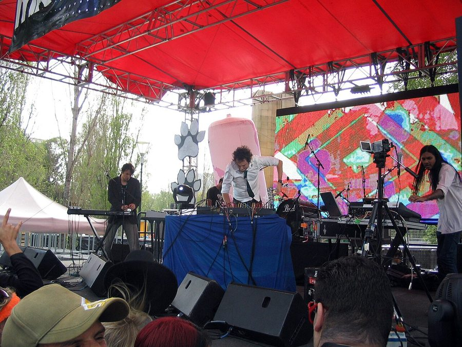

Infusion hit the road to launch 'All Night Sun Light'



We’ve waited long enough, but the return of Australia’s seminal electronic live act Infusion is nigh. In July their long-awaited new album All Night Sun Light will finally see the light of day, and they’ll be celebrating the occasion with a headline national tour, their first in four years. After giving the public a taste at the Smirnoff Experience shows last year, with performances this year at the Big Day Out, as well as the recent Groovin the Moo festivals, fans will finally get the chance to hear where the band is at musically in 2009.
Infusion tour for ‘All Night Sun Light’:
2nd July – Family, Brisbane
3rd July – Great Northern, Byron Bay
10th July – Oxford Art Factory, Sydney
11th July – Bizzos, Caringbah
17th July – Cambridge Hotel, Newcastle
18th July – Waves, Wollongong
19th July – Fowlers Live, Adelaide
22nd July – Amplifier, Perth
24th July – Billboard, Melbourne
30th July – Republic Bar, Tasmania